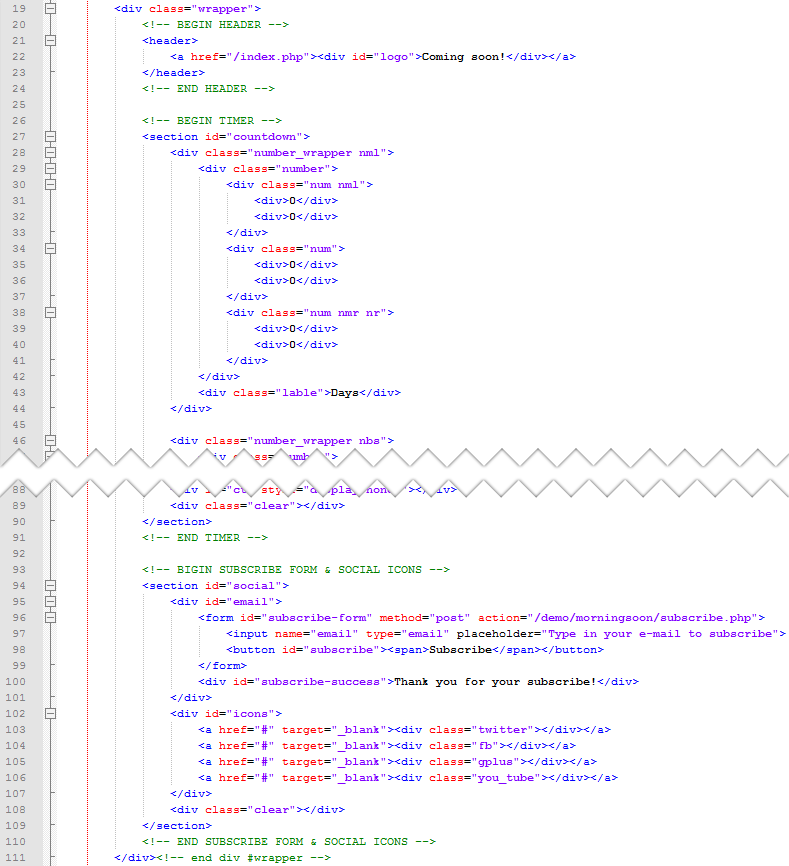

Created: 7/19/2012
By: Roman Novokhatsky
Email: romannovohackii@gmail.com
Thank you for purchasing my theme. If you have any questions that are beyond the scope of this help file, please feel free to email via my user page contact form here. Thank You so much!
This theme is a fixed layout with one columns which is divided into two sections. The timer (section #1) is within a section with an id of "countdown". Social icons and Subscribe form (section #2) are within a section with an id of "social". The general template structure is the same throughout the template. Here is the general structure.
On line 40:
Change the value of "action" on the path to the script which is responsible for subscription to the newsletter.
On lines 47-49:
Don't forget to change "#" on your links.
If you would like to change the social icon, you should replace value of "class" on the name of icon from the folder "/ img / icons".
For example: <div class="twitter"></div> --> <div class="tumblr"></div>
I'm using one CSS file in this theme. This file contains all of the specific stylings for the page. The file is separated into sections using:
/* === Main Section === */ /* === Header Section === */ /* === Timer Section === */ /* === Subscribe form & Social icons Section === */ /* === Icons Section === */ /* === Mobile Devices Section === */ /* === iPad Section === */
If you would like to edit a specific section of the site, simply find the appropriate label in the CSS file, and then scroll down until you find the appropriate style that needs to be edited.
Be careful! Change the styles for them to the appropriate devices. For example, if you want to change the width of the block on the iPad, you need to edit the styles in the "iPad Section". If you want to change anything on the desktop, you need to change the style BEFORE "Mobile Devices Section".
This theme imports three Javascript files.
The script below sets the timer on page using plugin "countdown" (Plugin is packed, so
you won't need to manually edit anything in the file).
The parameter "until" is responsible for the end date, which will go before the
countdown.
The parameter "onTick" is responsible for calling the function "updateTime"
To change the end date, look for parameter "end" at the beginning of the script /js/custom.js
Format of date: MOUNTH DAY, YEAR HOURS:MINUTES:SECONDS
var end = "January 1, 2013 00:00:00"; // Don't forget to change the Date
$("#ct").countdown({
until: new Date(end),
onTick: updateTime
});
/* ------------------------------- */
Function "updateTime" updates the time on the page and animates numbers. Change this function is not necessary.
$('input[placeholder]').placeholder();
I've included a PHP file, which should be located at the address you specified in the parameter "action"
PHP file does not contain code that is signed on the newsletter because this code is unique for each site.
Warning! PHP script must return TRUE, if the subscription was successful, and FALSE, if there was any error.
If you want to change the language of the timer, you must:
labels:["Years","Months","Weeks","Days","Hours","Minutes","Seconds"]
labels1:["Year","Month","Week","Day","Hour","Minute","Second"]
I've used the following files.
Once again, thank you so much for purchasing this theme. As I said at the beginning, I'd be glad to help you if you have any questions relating to this theme. No guarantees, but I'll do my best to assist. If you have a more general question relating to the themes on ThemeForest, you might consider visiting the forums and asking your question in the "Item Discussion" section.
Roman Novokhatsky